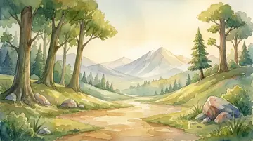

Nature Seed Нарисуйте путь. Соедините их.
Бесплатная физическая головоломка с рисованием, в которую можно играть прямо в браузере. Нарисуйте линию из ограниченного запаса чернил, и она станет скатом, мостом или ловушкой, которая доставит Water Drop к Seed. Каждый пройденный уровень возвращает к жизни акварельный лесной пейзаж.
Вышла 18 сентября 2026 года: 100 уровней, звезды за эффективность линий и сохраненный прогресс. Бесплатно на itch.io, Game Jolt и indiexpo; цель - версия для iOS и Android, в магазинах приложений ее пока нет.
Рисоватьрисуйте ограниченными чернилами
Соединитьдоставить Water Drop к Seed
Расцветверните лес к жизни
Внутри текущей сборки
Нарисованное становится частью уровня.
Каждый проведенный штрих становится твердым объектом с настоящими столкновениями, а Water Drop и Seed на него реагируют. Чернила и количество линий ограничены, поэтому форма линии имеет значение.
Статус выпуска Выпущено 18 сентября 2026 г.

Обзор игры
Расслабляющая головоломка с рисованием о том, как свести двух маленьких героев.
Идея
Нарисуйте путь, сведите Water Drop и Seed и смотрите, как тихий набросок оживает.
Релизная сборка
100 играбельных уровней с рисованием касанием, звездами за эффективность линий и прогрессом, который сохраняется между сессиями.
Аудитория
Игроки, которым нравятся спокойные головоломки, легкая физика, тема природы и неспешные мобильные сессии.
Статус
Вышла 18 сентября 2026 года, бесплатно в браузере. Цель - мобильная версия; в магазинах приложений ее пока нет.
Особенности
Что вы делаете в Nature Seed.
Физические пути, которые вы рисуете
Каждая головоломка начинается с рельефа, Seed и Water Drop. Линия игрока становится скатом, мостом или ловушкой, которая их соединяет.
Понятный отклик физики
Water Drop и Seed двигаются понятно, поэтому неудачная попытка показывает, что нужно изменить.
Награды за восстановление леса
Пройдите уровень, и нарисованная сцена наполнится цветом и растущими деревьями.
Короткие уровни, рисование касанием
Уровни короткие, а рисуете вы касанием, что подходит для быстрых сессий на телефоне.
Цикл игрового процесса
Как играть в Nature Seed
- Шаг 01Прочитать эскиз
Ищите скаты, провалы и преграды и самый безопасный способ соединить обоих героев.
- Шаг 02Проведите линию
Нарисуйте линию. Штрих станет скатом, направляющей или ловушкой для героев.
- Шаг 03Зафиксируйте и наблюдайте
Зафиксируйте линию и смотрите, как реагируют герои. Сразу видно, что сработало, а что нет.
- Шаг 04Расцвет или доработка
Если Water Drop доберется до Seed, лес вернется. Если нет, перерисуйте линию с учетом того, что вы узнали.
История / мир
Эскизный лес ждет воды.
Nature Seed начиналась как физическая головоломка с рисованием о восстановлении чего-то хрупкого, а не о том, чтобы сталкивать объекты.
В центре сюжета Seed, Water Drop и лес, который по ходу игры возвращается от наброска к цвету. Каждая головоломка - маленькое дело: изучить местность, нарисовать путь и помочь воде добраться до того, что может расти.
- Дизайнерское направление
- Спокойная физика и заметное восстановление
- Персонажи
- Water Drop и Seed
- Взаимодействие
- Рисование касанием
- Награда за мастерство
- Решение в одну линию приносит три звезды.
Коротко
Сегодня бесплатно в браузере, а целевая платформа - мобильные устройства.
У вас ограниченный запас чернил и число линий. Используйте их, чтобы довести Water Drop до Seed, затем переиграйте уровень и сократите решение до одной линии ради трех звезд.
- Жанр
- Физическая головоломка с рисованием
- Целевая платформа
- iOS/Android
- Формат сессии
- Короткие спокойные уровни
Скачать ресурсы
Материалы Nature Seed для прессы и авторов
Превью WebP для освещения в прессе, рассмотрения издателями и ссылок на страницу магазина. Исходные файлы в полном разрешении доступны по запросу.
Бренд и персонажи
 Water DropСиний персонаж, который должен добраться до Seed.
Water DropСиний персонаж, который должен добраться до Seed.
 Персонаж SeedЗеленый персонаж, до которого пытается добраться Water Drop.
Персонаж SeedЗеленый персонаж, до которого пытается добраться Water Drop.
 Рост дереваДерево, которое вырастает после решения.
Рост дереваДерево, которое вырастает после решения.
 Лесное менюФон главного меню.
Лесное менюФон главного меню.
 Фон игрового процессаФон уровня с пустой игровой зоной.
Фон игрового процессаФон уровня с пустой игровой зоной.
Эскизы уровней головоломки с рисованием
 Уровень эскиза 01Набросок до решения.
Уровень эскиза 01Набросок до решения.
 Уровень эскиза 02Набросок до решения.
Уровень эскиза 02Набросок до решения.
 Уровень эскиза 03Набросок до решения.
Уровень эскиза 03Набросок до решения.
 Уровень эскиза 04Набросок до решения.
Уровень эскиза 04Набросок до решения.
 Уровень эскиза 05Набросок до решения.
Уровень эскиза 05Набросок до решения.
 Уровень эскиза 06Набросок до решения.
Уровень эскиза 06Набросок до решения.
 Уровень эскиза 07Набросок до решения.
Уровень эскиза 07Набросок до решения.
 Уровень эскиза 08Набросок до решения.
Уровень эскиза 08Набросок до решения.
 Уровень эскиза 09Набросок до решения.
Уровень эскиза 09Набросок до решения.
 Уровень эскиза 10Набросок до решения.
Уровень эскиза 10Набросок до решения.
Восстановленные сцены головоломки
 Восстановлен уровень 01Восстанавливается после решения.
Восстановлен уровень 01Восстанавливается после решения.
 Восстановлен уровень 02Восстанавливается после решения.
Восстановлен уровень 02Восстанавливается после решения.
 Восстановлен уровень 03Восстанавливается после решения.
Восстановлен уровень 03Восстанавливается после решения.
 Восстановлен уровень 04Восстанавливается после решения.
Восстановлен уровень 04Восстанавливается после решения.
 Восстановлен уровень 05Восстанавливается после решения.
Восстановлен уровень 05Восстанавливается после решения.


Восстановлен уровень 06Восстанавливается после решения. Восстановлен уровень 07Восстанавливается после решения.
Восстановлен уровень 07Восстанавливается после решения.
 Восстановлен уровень 08Восстанавливается после решения.
Восстановлен уровень 08Восстанавливается после решения.
 Восстановлен уровень 09Восстанавливается после решения.
Восстановлен уровень 09Восстанавливается после решения.
 Восстановлен уровень 10Восстанавливается после решения.
Восстановлен уровень 10Восстанавливается после решения.
Хронология разработки
Хронология разработки Nature Seed
- Лето 2025 г.Оригинальная концепция
Nature Seed началась с идеи спокойной мобильной головоломки о связи и восстановлении природы.
- октябрь 2025 г.Образы Seed и Water Drop
Мы закончили дизайн-документ и остановились на Seed и Water Drop как главных героях.
- декабрь 2025 г.Начало разработки
Мы спланировали первые уровни на бумаге, затем начали сборку, и основные системы стали играбельными.
- февраль 2026 г.Большой черновой проход по уровням
Большой черновой проход по уровням дал нам основу для дальнейшей шлифовки и балансировки.
- март-апрель 2026 г.Обзор механики и уровней
Мы пересмотрели лишние механики и черновые уровни, а затем упростили или переработали их, чтобы игра оставалась спокойной.
- июль 2026 г.Проход по вертикальному прототипу
В июльской сборке рисование с ограниченными чернилами, звезды за эффективность, сохраненный прогресс и стабильная генерация линий сложились в один играбельный цикл.
- 18 сентября 2026 г.Релиз Nature Seed
Игра вышла под названием Nature Seed: 100 уровней, звезды за эффективность линий, сохраненный прогресс и сцены акварельного восстановления.
Часто задаваемые вопросы Nature Seed
Частые вопросы о Nature Seed
Бесплатна ли Nature Seed?
Да. В нее можно играть бесплатно в браузере на itch.io, Game Jolt и indiexpo.
Вышла ли уже Nature Seed?
Да. Игра вышла 18 сентября 2026 года с 100 уровнями. Версия для iOS и Android - целевая платформа, в магазинах приложений ее пока нет.
Что за игра Nature Seed?
Расслабляющая физическая головоломка с рисованием. Нарисованные вами линии становятся твердыми объектами, которые помогают Water Drop и Seed встретиться.
Как играть в Nature Seed?
Изучите рельеф, проведите маршрут ограниченными чернилами и наблюдайте, как реагируют оба героя. Если не получилось, перерисуйте. Чем меньше линий, тем больше звезд, а одна линия приносит три.
Кто делает Nature Seed?
WillowinWorlds, независимая студия, создающая мобильные головоломки и аркады.
Можно ли использовать пресс-материалы Nature Seed?
Да, для прессы, рассмотрения издателями и ссылок на магазины. Исходные файлы остаются закрытыми, пока вы их не запросите.
Nature Seed Девлог
Что изменилось и когда
- Релиз Nature Seed
Nature Seed вышла под окончательным названием как бесплатная браузерная игра на itch.io, Game Jolt и indiexpo: 100 уровней, звезды за эффективность линий и сохраненный прогресс.
- Восстановление уровня 2 и повышение стабильности
Уровень 2 теперь использует свою производственную фоновую пару с более надежной настройкой уровня, проверкой коллизий и обратной связью по завершению.
- июль 2026 г.Играбельная сборка
Июльская сборка объединила рисование с ограниченными чернилами, звезды за эффективность, сохраненный прогресс и отклик восстановления.
- апрель 2026 г.Переработка уровней
После внутреннего обзора мы переделали несколько черновых уровней, чтобы снизить сложность и сделать их понятнее на телефоне.
- март 2026 г.Обзор механики
Мы протестировали дополнительные механики и убрали те, из-за которых уровни казались перегруженными.
- февраль 2026 г.Большой черновой проход по уровням
Большой черновой проход по уровням стал основой для дальнейшей шлифовки и балансировки.
- декабрь 2025 г.Начало разработки
Основные системы перешли из дизайн-документа в играбельную форму.
- Лето 2025 г.Оригинальная концепция
Первая версия Nature Seed была идеей спокойной головоломки о связи и восстановлении природы.